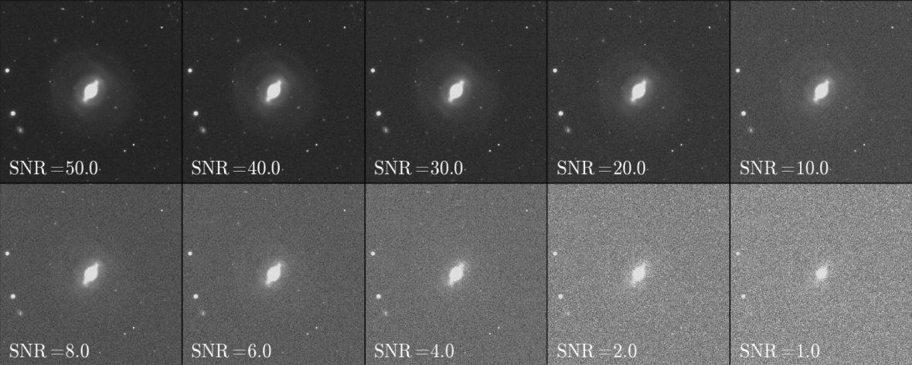

de Albernaz Ferreira,
@astroferreira

Here we investigated how non-parametric morphology is affected by cosmological dimming, resolution degradation, noise and angular depth. The main goal was to assess how our discriminator function performed with high redshift simulations images of nearby galaxies. (de Albernaz Ferreira & Ferrari, 2018)
